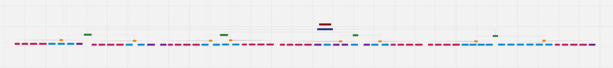

8. Catálogo Unificado de Requisitos
Este documento consolida os requisitos funcionais e não funcionais do sistema SIGMA, estruturando suas relações com os objetivos do produto, regras de negócio e planejamento de entregas. Os requisitos funcionais são declarados através de Casos de Uso (UC), detalhando fluxos principais, alternativos, exceções e critérios de aceitação.
8.1 Catálogo de Casos de Uso
O painel a seguir apresenta os Casos de Uso do sistema, indicando o vínculo com Características do Produto (CP) e Objetivos Específicos (OE), capacidades funcionais (RF), requisitos não funcionais (RNF), regras de negócio (RN) e status no MVP:
Permitir que as secretárias e administradores acessem e encerrem suas sessões com credenciais seguras, protegendo o acesso aos dados sensíveis da instituição.
Permitir o cadastro, controle e inativação de contas da equipe administrativa da creche com restrições e políticas de senhas fortes.
Disponibilizar espaço central para lançamento, visualização e remoção de avisos internos entre a equipe administrativa da creche.
Cadastrar cards de alunos, preencher fichas socioeconômicas e termos escolares, editar dados, registrar histórico e exigir confirmação de salvamento.
Anexar documentos digitalizados (certidões, declarações) em formato PDF, realizar download e substituir arquivos vinculados às fichas.
Cadastrar novas etapas de ensino e turmas da creche, vincular turmas às suas respectivas etapas e gerenciar inativações com histórico.
Vincular o card de matrícula do aluno a uma turma existente ativa, garantindo alocação única e consistência na formação de salas.
Consultar alunos por nome completo ou parcial (sem distinção de maiúsculas/acentos) e pesquisar turmas e etapas em tempo hábil.
8.2 Tabela Geral de Requisitos
A tabela a seguir consolida as especificações de todos os requisitos funcionais e não funcionais do sistema:
| ID | Tipo | Nome do Requisito | Descrição |
|---|---|---|---|
| RF01 | Funcional | Disponibilizar quadro de avisos | O sistema deve disponibilizar um espaço central para visualização e gerenciamento de avisos administrativos da creche. |
| RF02 | Funcional | Lançar avisos | As secretárias ou administradores devem poder publicar novos avisos informando assunto, descrição, autor e data. |
| RF03 | Funcional | Exibir avisos | O sistema deve listar de forma clara os avisos cadastrados no mural geral da instituição. |
| RF04 | Funcional | Apagar avisos | As secretárias ou administradores devem poder excluir avisos publicados quando não forem mais necessários. |
| RF05 | Funcional | Cadastrar Usuários | Permitir que usuários com perfil administrativo realizem o cadastro de novos usuários no sistema. |
| RF06 | Funcional | Realizar login | As secretárias e administradores devem poder realizar login no sistema com e-mail cadastrado e senha. |
| RF07 | Funcional | Realizar logout | As secretárias e administradores devem poder encerrar com segurança sua sessão ativa no sistema. |
| RF08 | Funcional | Cadastrar card de aluno | As secretárias devem poder criar cards de alunos representando os registros oficiais de matrícula da instituição. |
| RF09 | Funcional | Preenchimento de fichas | As secretárias devem poder preencher as fichas obrigatórias: Termo de Compromisso Escolar, Termo de Autorização de Uso de Imagem, Termo de Saída de Aluno, Ficha Socioeconômica e Requerimento de Matrícula. |
| RF10 | Funcional | Editar fichas do card | As secretárias devem poder editar qualquer uma das informações das fichas do card para manutenção e atualização cadastral contínua. |
| RF11 | Funcional | Inativar card de aluno | As secretárias devem poder inativar o card de um aluno, alterando seu status para "inativo" e restringindo edições. |
| RF12 | Funcional | Reativar card de aluno | Permitir a alteração do status do card de aluno de inativo para ativo, restaurando as permissões de edição e vinculação. |
| RF13 | Funcional | Vincular aluno a turma | As secretárias devem poder associar o card de matrícula de um aluno a uma turma cadastrada e ativa da creche. |
| RF14 | Funcional | Anexar documentos | O sistema deve permitir anexar cópias digitalizadas de documentos (certidões, declarações, termos) em formato PDF às fichas dos alunos. |
| RF15 | Funcional | Editar/Substituir documento | O sistema deve permitir substituir um documento PDF previamente anexado a uma ficha, removendo o arquivo anterior e mantendo o novo documento. |
| RF16 | Funcional | Baixar fichas e documentos | O sistema deve permitir o download individual de qualquer ficha de matrícula ou documento anexado em formato PDF. |
| RF17 | Funcional | Apresentar histórico de edições | O sistema deve permitir a consulta do histórico de edições de uma ficha, exibindo usuário responsável, data/hora da edição, campo alterado, valor anterior e novo valor. |
| RF18 | Funcional | Cadastrar Etapa | O sistema deve permitir que as secretárias ou administradores cadastrem novas etapas escolares da creche. |
| RF19 | Funcional | Inativar turma e etapa | O sistema deve permitir inativar turmas ou etapas quando não estiverem mais em operação, preservando o histórico de vínculos anteriores. |
| RF20 | Funcional | Vincular turma à etapa | O sistema deve permitir vincular uma turma a uma etapa de ensino existente e ativa. |
| RF21 | Funcional | Buscar aluno pelo nome | O sistema deve permitir buscar alunos pelo nome completo ou parcial, sem distinção de maiúsculas, minúsculas ou acentos, retornando os registros de matrícula correspondentes. |
| RF22 | Funcional | Buscar turmas e etapas | O sistema deve permitir pesquisar turmas e etapas cadastradas na instituição para consulta e vinculação. |
| RF23 | Funcional | Possibilitar salvamento com confirmação | O sistema deve exigir confirmação explícita ("Confirmar" ou "Cancelar") ao solicitar o salvamento ou alteração de uma ficha de matrícula, prevenindo perdas acidentais. |
| RF24 | Funcional | Cadastrar Turma | O sistema deve permitir cadastrar uma nova turma associada obrigatoriamente a uma etapa de ensino existente. |
| RNF01 | Não Funcional (Segurança) | Privacidade de Dados e Proteção LGPD | Garantir a privacidade dos dados pessoais e sensíveis das crianças e famílias, restringindo o acesso e a visualização exclusivamente a usuários autenticados da creche, em conformidade com a LGPD. |
| RNF02 | Não Funcional (Segurança) | Restrição de Acesso não Autenticado | O sistema deve restringir o acesso a todas as rotas e funcionalidades internas exclusivamente a usuários autenticados com credenciais válidas. Requisições não autenticadas devem retornar HTTP 401 e redirecionar para login. |
| RNF03 | Não Funcional (Usabilidade) | Interface Responsiva e Adaptável | O sistema deve adaptar seus componentes visuais para monitores desktop e dispositivos móveis (resoluções de 360px mobile, 768px tablet e 1280px desktop), preservando layout e funcionalidade. |
| RNF04 | Não Funcional (Usabilidade) | Suporte a Modo Escuro Alternável | O sistema deve disponibilizar alternância de tema visual (claro/escuro), assegurando índices de contraste e legibilidade adequados em ambas as paletas. |
| RNF05 | Não Funcional (Desempenho) | Tempo de Resposta ao Logar | Garantir tempo de resposta inferior a 2 segundos entre o clique no botão de login e a autorização de acesso ao painel, sob conexão de rede estável. |
| RNF06 | Não Funcional (Desempenho) | Tempo de Resposta ao Buscar Aluno | Retornar os resultados da consulta de alunos em tempo inferior a 2 segundos para 95% das requisições na base da creche (estimada em ~200-300 registros anuais). |
| RNF07 | Não Funcional (Desempenho) | Tempo de Resposta para Buscar Turmas ou Etapas | Retornar os resultados da consulta de turmas e etapas em tempo inferior a 2 segundos para 95% das requisições. |
| RNF08 | Não Funcional (Desempenho) | Tempo de Resposta para Salvar Ficha | O sistema deve concluir o salvamento de uma ficha de matrícula em tempo inferior a 5 segundos para 95% das requisições, exibindo confirmação de sucesso. |
| RNF09 | Não Funcional (Confiabilidade) | Disponibilidade Operacional | O sistema deve assegurar disponibilidade de 99,5% durante o horário de expediente comercial da creche (segunda a sexta-feira, das 07h00 às 19h30). |
| RNF10 | Não Funcional (Desempenho) | Suporte a Acessos Concorrentes | O sistema deve suportar simultaneamente a equipe administrativa (mínimo de 10 usuários simultâneos) sem degradação perceptível de tempo de resposta. |
8.3 Árvore de Rastreabilidade
A representação gráfica abaixo conecta o problema, objetivos específicos (OEs), características do produto (CPs) e os requisitos no Miro:
Abrir Árvore de Rastreabilidade diretamente no Miro
Captura da Árvore de Rastreabilidade

Registro atualizado da rastreabilidade estrutural dos requisitos do SIGMA.